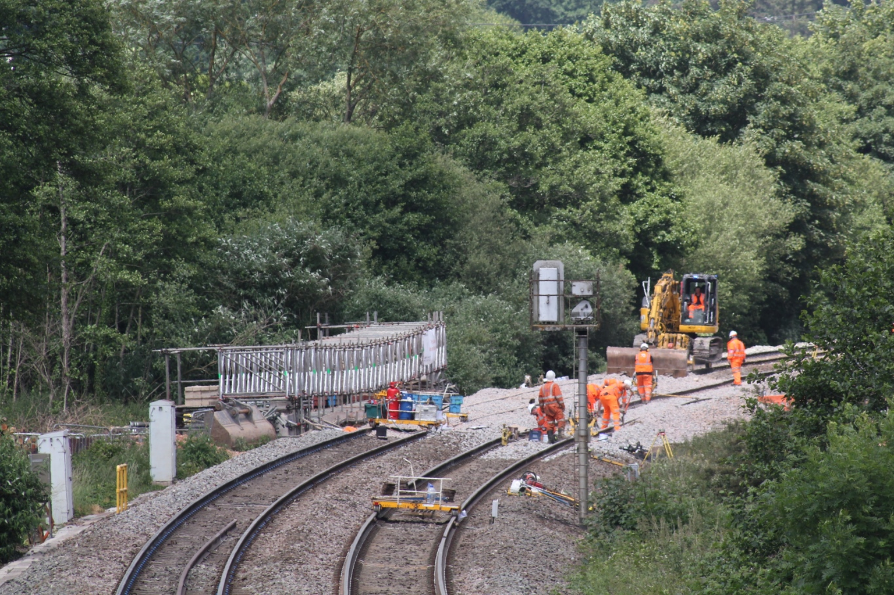
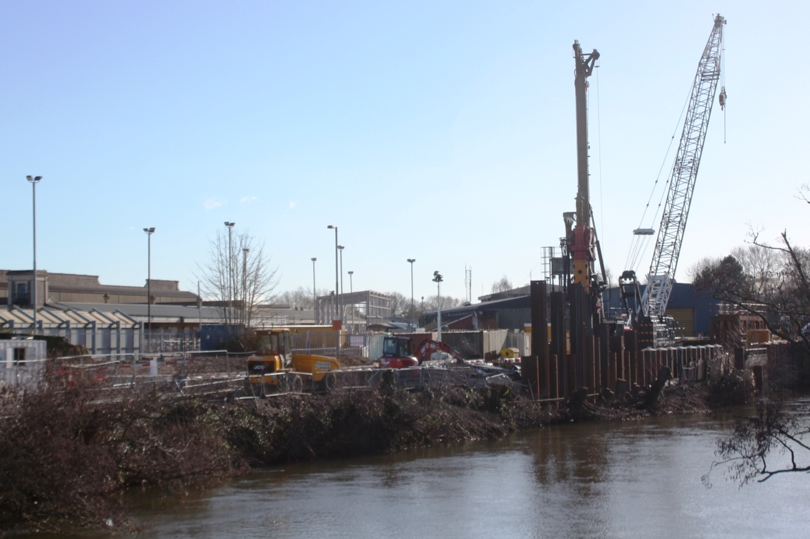
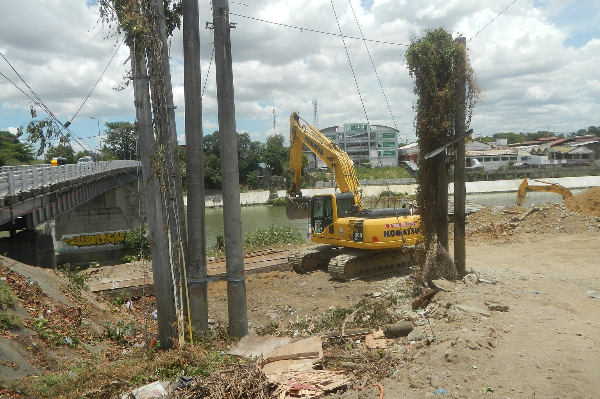
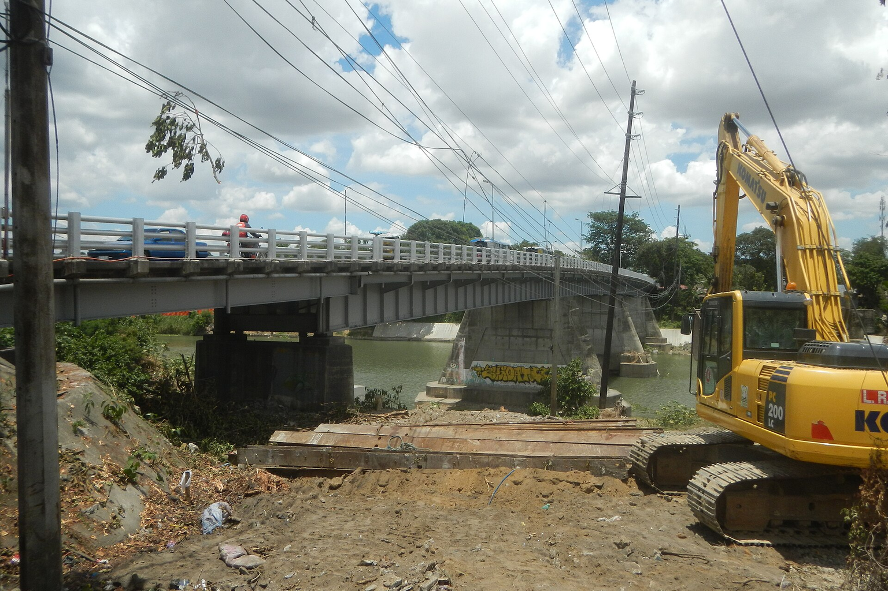

A validation phase is required before committing capital to Global Sovereign AI Infrastructure: National Computing Strategies and Semiconductor Supply Chain Resilience by 2030. This report examines the intersection of China's climate resilience infrastructure upgrades and semiconductor supply chain resilience, driven by the 2026 flood disasters. It validates the investment thesis for sovereign investors and technology partners, particularly those with China-UAE resources, to capitalize on the export of integrated climate resilience solutions to Gulf states. The analysis is grounded in private document evidence from the 2026 flood events and supplementary web evidence from semiconductor equipment manufacturers, providing a data-backed foundation for strategic decisions.
Current Decision Baseline: Climate Resilience Infrastructure as a Strategic Imperative
The 2026 flood disasters in China have created an immediate and sustained demand for climate resilience infrastructure, with government funding already flowing into disaster response and recovery. This section establishes the baseline for investment decisions, highlighting the scale of the crisis and the emerging market opportunities.

The private document context details the catastrophic impact of the 2026 floods, with at least 101 deaths, 30 missing, and 364 injuries across four major events in Guangxi, Hubei, Chongqing, and Gansu. Insurance claims have reached 380,000 with estimated losses of 6.38 billion RMB, and the central government has allocated 180 million RMB for emergency response.
These figures underscore the severity of the crisis and the urgent need for infrastructure upgrades. The document identifies key investment opportunities in water conservancy upgrades, urban drainage, geological hazard monitoring, and emergency equipment. It emphasizes that sustainable opportunities lie in 'climate resilience infrastructure' over the next 3-5 years, rather than short-term disaster relief supplies. For sovereign investors, the baseline is clear: government spending on climate resilience will increase, creating a multi-billion-dollar market.
The document specifically recommends prioritizing companies with existing government orders and recurring revenue in water digitalization, monitoring, and drainage equipment, as these are more likely to benefit from sustained investment. This baseline is supported by supplementary web evidence from NAURA Technology's 2025 annual report, which shows a 30.85% revenue increase, indicating strong growth in semiconductor equipment that supports AI and high-performance computing, a key enabler for climate resilience technologies.
The causal mechanism is clear: climate disasters drive government spending on infrastructure, which in turn requires advanced semiconductor technologies for monitoring, communication, and data analysis. This creates a virtuous cycle of investment in both physical and digital infrastructure. For sovereign investors, the baseline indicates a strategic window to invest in companies with recurring revenue models in water digitalization and monitoring, which are likely to see sustained government contracts. The Gulf export potential adds an additional growth vector, as China's technological upgrades can be adapted for Gulf states facing similar flood risks.
- text.md — This establishes the geographic scope and severity of the disasters, which drives the demand for climate resilience infrastructure.
- text.md — The human toll underscores the urgency for investment in monitoring and early warning systems.
Options and Trade-offs: Prioritizing Long-term Infrastructure over Short-term Relief
The private document outlines several investment options, ranging from immediate disaster relief to long-term climate resilience infrastructure. The trade-off is between short-term gains from emergency equipment and sustainable returns from infrastructure upgrades.

The document identifies six key opportunity areas: water conservancy upgrades, urban drainage, geological hazard monitoring, emergency equipment, reconstruction materials, and agricultural recovery. It explicitly states that 'the real sustainable opportunity is not short-term stockpiling of disaster relief materials, but climate resilience infrastructure over the next 3-5 years.'
For each option, the document provides a risk assessment. For example, emergency equipment offers immediate orders but revenue fluctuates with disaster cycles. Reconstruction materials face intense competition and long payment cycles. In contrast, water digitalization and monitoring offer higher technical barriers and recurring service revenue.
The document advises investors to 'prioritize companies with existing government orders and recurring revenue in water digitalization, monitoring, and drainage equipment, rather than simply chasing cement, building materials, and other short-term themes.' This is a clear trade-off between short-term speculative gains and long-term value creation.
Supplementary web evidence from AMEC's 2025 interim report shows a 43.88% revenue increase and 36.62% net profit growth, driven by R&D investment of 1.492 billion RMB (30.07% of revenue). This indicates that companies investing in advanced semiconductor equipment are well-positioned to support AI-driven climate technologies, aligning with the long-term infrastructure theme. The trade-off analysis suggests allocating capital to companies with recurring revenue models, which offer more stable returns and align with long-term infrastructure spending.
- text.md — This directly guides investment strategy towards long-term infrastructure over short-term relief.
- text.md — This provides a concrete screening criterion for investors.
Causal and Economic Drivers: Government Spending and Technological Demand
The economic drivers behind the climate resilience market are rooted in government policy responses to the 2026 floods, which are channeling funds into infrastructure upgrades. Simultaneously, the demand for AI and semiconductor technologies is driving growth in advanced packaging and compound semiconductor equipment.

The private document details government financial responses: the central government pre-allocated 180 million RMB for emergency response, and the National Development and Reform Commission allocated 100 million RMB to Zhejiang, 30 million to Hebei, and 30 million to Jilin for infrastructure restoration. These are direct fiscal injections that will stimulate demand for construction, monitoring, and digital solutions.
The document also notes that the first half of 2026 saw 11.326 million people affected by floods and geological disasters, with direct economic losses of 33.87 billion RMB. This scale of loss is a powerful driver for government investment in prevention and mitigation infrastructure. On the semiconductor side, supplementary web evidence from NAURA's annual report indicates that advanced packaging equipment sales reached $6.4 billion in 2025, up 19.6% year-over-year, driven by AI, high-performance computing, and 5G/6G technologies.
This growth is directly linked to the demand for AI chips used in climate monitoring and data processing. The causal mechanism is clear: climate disasters drive government spending on infrastructure, which in turn requires advanced semiconductor technologies for monitoring, communication, and data analysis. This creates a virtuous cycle of investment in both physical and digital infrastructure.
While government spending is a key driver, the document warns that 'the so-called national loss figures online are incomplete' and that official data is still pending. This uncertainty could affect the pace of funding allocation. For sovereign investors, understanding these drivers is crucial for timing investments. The immediate government response indicates a near-term boost to infrastructure spending, while the semiconductor growth suggests a longer-term demand for AI-enabled solutions.
- text.md — This shows immediate government funding that will flow into infrastructure projects.
- text.md — The scale of losses justifies large-scale investment in resilience.
Failure Modes and Uncertainty: Risks in Implementation and Market Volatility
Despite the clear opportunities, there are significant risks and uncertainties, including incomplete data, potential delays in government funding, and the volatility of disaster-related markets. This section examines these failure modes to inform risk mitigation strategies.

The private document highlights data limitations: 'The Ministry of Emergency Management has not yet released the July 2026 national disaster summary, so some online 'national loss figures' are incomplete.' This uncertainty can lead to misinformed investment decisions. The ongoing nature of the disaster adds further uncertainty, as the central meteorological station continues to issue yellow warnings for heavy rain across multiple provinces.
This means the full extent of damage and subsequent government response is not yet known. The document also notes that the Gansu landslide on July 7 is still under investigation and 'cannot be simply attributed to heavy rain,' indicating that some disasters may have non-climatic causes, which could affect the demand for climate-specific solutions.
In the semiconductor sector, supplementary evidence from AMEC's interim report shows a 46.87% decline in operating cash flow, indicating potential liquidity pressures despite revenue growth. This suggests that even high-growth companies may face financial volatility. The document also warns that 'traditional insurance companies will first face increased payouts, so it cannot be simply understood that the bigger the disaster, the more insurance stocks benefit.'
This highlights the risk of oversimplifying investment theses. For sovereign investors, these failure modes suggest the need for a phased approach, with careful monitoring of official data releases and disaster developments. Diversification across different infrastructure segments can mitigate the risk of overexposure to any single disaster-related market. The ongoing nature of the disaster adds uncertainty to the market outlook, requiring adaptive strategies.
- text.md — This underscores the risk of acting on incomplete data.
- text.md — The ongoing nature of the disaster adds uncertainty to the market outlook.
Staged Decision Gates: Phased Investment Approach for Sovereign Investors
Given the uncertainties, a staged decision-gate approach is recommended, allowing investors to scale commitments as evidence accumulates. This section outlines specific gates based on the document's insights.

The private document suggests that the most sustainable opportunities are in climate resilience infrastructure, but the timing of government contracts and project awards is uncertain. Therefore, investors should adopt a phased approach, starting with pilot projects and scaling based on demonstrated demand. The document also highlights the Gulf export potential, proposing an integrated solution package for UAE municipalities, developers, and industrial zones.
This suggests a second gate focused on international expansion, contingent on successful domestic implementation. Supplementary web evidence from NAURA and AMEC indicates strong growth in semiconductor equipment, which is a critical enabler for AI-driven climate solutions. This suggests a gate for investing in semiconductor supply chain resilience to ensure the availability of chips for monitoring and communication systems.
The document's emphasis on 'existing government orders and recurring revenue' as a screening criterion implies a gate for selecting companies with proven track records, reducing the risk of investing in unproven technologies. The document also notes that the Gansu landslide on July 7 is still under investigation and 'cannot be simply attributed to heavy rain,' indicating that some disasters may have non-climatic causes, which could affect the demand for climate-specific solutions.
For sovereign investors, a staged approach allows for flexibility and risk management. The first gate is to invest in domestic climate resilience companies with strong government ties. The second gate is to expand into Gulf markets once the domestic solutions are proven. The third gate is to ensure semiconductor supply chain resilience to support the technological backbone of these solutions.
- text.md — This provides a concrete export opportunity that can be pursued after domestic validation.
- text.md — These criteria form the basis for a selection gate.
Where to Start
The near-term objective is to turn the evidence into a few choices that preserve learning before committing scarce capital or operating capacity.
-
Decision gateConduct due diligence on Chinese companies with existing government contracts in water digitalization and monitoring, focusing on order backlog, receivables, and cash flow. Progress should be visible through identify at least 3 companies meeting the screening criteria outlined in the private document. The private document emphasizes prioritizing companies with government orders and recurring revenue, as they are better positioned for long-term climate resilience spending.
-
Decision gateMonitor official disaster data releases and government funding allocations to refine investment timing. Progress should be visible through track quarterly updates from the Ministry of Emergency Management and NDRC to adjust investment thesis. The document notes that official data is incomplete, so staying informed is critical to avoid misinformed decisions.
-
Decision gateDevelop an integrated climate resilience solution package for Gulf export, combining urban drainage, slope monitoring, mobile pumping, satellite communication, and insurance. Progress should be visible through secure at least one pilot project with a UAE municipality or developer. The private document suggests this cross-border opportunity, leveraging China's technological upgrades from the 2026 floods.
-
Decision gateInvest in semiconductor supply chain resilience, particularly in advanced packaging and compound semiconductor equipment, to ensure chip availability for AI-driven climate. Progress should be visible through allocate capital to semiconductor equipment companies with strong growth, such as those highlighted in the source-backed evidence set. Supplementary web evidence shows robust growth in advanced packaging and SiC equipment, which are essential for AI and high-performance computing in climate monitoring.
-
Decision gateScale investments in climate resilience infrastructure as government contracts materialize, focusing on recurring revenue models. Progress should be visible through achieve a portfolio of investments with at least 50% recurring revenue from government contracts. The document identifies climate resilience infrastructure as the most sustainable opportunity over 3-5 years.